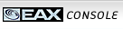
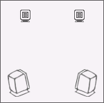

Complete UI Breakdown, Tabs & Skin Engine Assets Extracted via REA

EAX Console — Audio Control Center
Audio Clean-up removes background hisses, pops, and crackles from old vinyl records or audio cassettes in real time during playback or recording.
Source Configuration
70%
Filters & Removal
12 dB
45%
Creative Multi-Speaker Surround (CMSS) upmixes stereo and multi-channel audio tracks into an immersive 3D surround sound field on speakers or headphones.
Surround Processing Mode
0
Speaker Spatial Mapping

EAX Advanced HD environmental audio effects simulator. Adds reverberation, spatial depth, and acoustic room modeling to gaming and music.
Effect Category
Active Preset: Concert Hall
Concert HallReverb: 2.4s
CathedralReverb: 4.8s
Living RoomReverb: 0.8s
AmphitheaterReverb: 3.1s
Stone RoomReverb: 1.5s
AuditoriumReverb: 2.8s
65%
Karaoke processing removes lead vocals from songs, shifts pitch/key to match your vocal range, and applies microphone effects with real-time balance.
Vocal Cancellation & Pitch
80%
0
Microphone Settings
75%
Time Scaling adjusts the audio playback speed from 50% to 200% without altering the vocal or musical pitch.